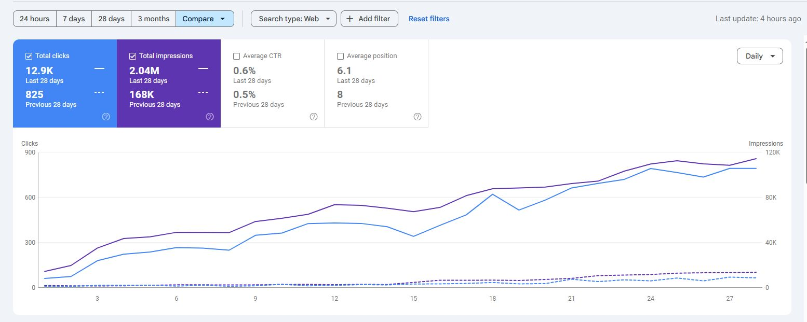

نمو الظهور والنقرات
من ظهور محدود إلى نمو عضوي يمكن تتبعه
عملنا على توسيع تغطية الكلمات وتحسين الصفحات الحالية وإنشاء الصفحات المطلوبة وربط المحتوى ببعضه، مع متابعة الفهرسة والأداء من خلال Search Console.
خلال فترة العمل، ارتفعت النقرات من 825 إلى 12.9 ألف نقرة مع تحسن واضح في وصول الصفحات في السوق السعودي.
